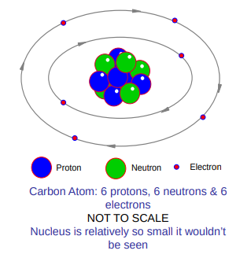

Index
- Section 0
- Section 1 - Nuclear Basics
- Lecture 1.0 - Learning outcomes and technical tour
- 1.1 Atoms and Nuclei
- 1.2 - Nuclear Structure & Nuclear Reactions
- 1.3 Isotopes and Radioactivity
- 1.4 Radiation and Interactions with MAtter
- Section 2 - Neutrons and Fission
1. Nuclear Fission
Atomic Structure• Atom consists of many "Subatomic" particles
• Largest are Protons, Neutrons and Electrons
• The Nucleus of the atom:
Made from Protons. Neutrons and smaller fundamental particles.
Surrounded by Electrons at varying orbits
Makes up almost all of the atomic mass (Although most of the volume is defined by the space occupied by the Electrons.)

Standard Model of Particle Physics
• The "Quantum Field Theory" describes the fundamental particles which make up all matter
• It also describes 3 out of 4 of the fundamental forces:
Strong Force
Weak Force
Electromagnetic Force
• Does not describe the 4th force, Gravity.
• The Strong Force is strongest but shortest range.
Binds together particles in Nucleus
Created by exchange of "Gluons"
Fission
• Name given to splitting of atom nucleus when hit by an incoming neutron.
• Only occurs in a selection of heavy elements such as Uranium.
• Binding energy in large nucleus is greater than that required for 2 elements roughly half the size.
When the heavier nucleus is split, the excess energy is released as heat
This is heat is used to generate electricity (usually traditional Rankine cycle)
Isotopes
• Most Elements come in forms with different atomic masses
The number of protons does not change but they may have different number of neutrons.
• Isotopes are labelled according to number of "Nucleons" (sum of protons an neutrons)
• The different masses define the isotopes of the element.
Hydrogen has 1 proton therefore an atomic mass of 1, adding a neutron creates "Deuterium" an isotope of hydrogen with atomic mass 2 and so on...
Uranium
• The most complex of all 92 naturally occurring elements
• Has 3 naturally occurring isotopes and 3 man-made isotopes
• Contains 92 protons plus:
140, 141 or 144 Neutrons (for man-made isotopes)
142, 143 or 146 Neutrons (for Naturally occurring isotopes)
• Heaviest isotope of Uranium is 238 (natural)
Splitting the Atom process
1) A slow moving neutron is fired into the nucleus of a large atom (commonly U235)
2) The Neutron is absorbed, making the nucleus unstable
3) The unstable nucleus oscillates then splits to create 2 daughter isotopes with smaller nuclei
4) 2 or 3 neutrons are emitted at high speed.
Nuclear Energy
• Total mass of fission products is less than the mass of the original atom due to effects of nuclear strong force
• Binding energy and mass difference are related by Einsteins Equation "E=mc2"
• As "c" is such a large number (299,792km/s), a very small change in mass can equate to a large release in energy.
• Energy is mainly released as kinetic energy (resulting in heat)
Nuclear Chain Reactions
• Occurs when neutrons generated in fission go on to produce additional fission in at least 1 other nucleus.
• This second nucleus then goes on to generate further Fission...
• The process is controlled in nuclear power applications (uncontrolled = bomb)
Critical Mass
• Not all Neutrons go on to produce further fission
• If Neutrons are lost faster than they are formed then the reaction will not be self-sustaining
• The point at which the chain reaction becomes self-sustaining is referred to as "Critical Mass"
• The critical mass depends on the composition, shape, density and purity of the material (Sphere shape minimises leakage of Neutrons)
• Neutron reflectors can be used to reduce neutron losses ( 15kg of U235 required for critical mass)
Controlled Fission
• Fission is controlled by ensuring that only 1 of the possible 3 neutrons is absorbed into a further nucleus
• If less than 1 is absorbed the fission process will die out
• If more than 1 is absorbed the reaction will continue to grow (like an bomb)
• Neutrons are absorbed typically using Boron or Cadmium to control the reaction
Moderation
• The neutrons emitted in fission are at high velocity
• Fast neutrons are less likely to cause further fission
• The neutrons must be "Moderated" (Slowed)
• Materials with light nuclei are best for moderators
• Neutrons bounce of the moderator transferring energy & velocity,
• When the Neutron has reduced in velocity to the order of "Thermal Velocities", it is known as a "thermal neutron".
• Common moderators are:
Graphite
Water
Heavy Water
Fissile Nuclei
• Thermal neutrons can efficiently fission fissile nuclei
• These are heavy elements with odd number of Nucleons
• U235 and Pu239 are examples of fissile nuclei
Nuclear Fuel
• Fuel in power generation usually U235
This is a natural isotope of Uranium but only accounts for 0.7% of the uranium mass (U238 makes up 99.3% and is non-fissile)
• The fuel is "Enriched" to increase the ratio of fissile material
• The enrichment can create uranium fuels with:
>3% for civil grade processes (power generation)
>90% for weapons grade